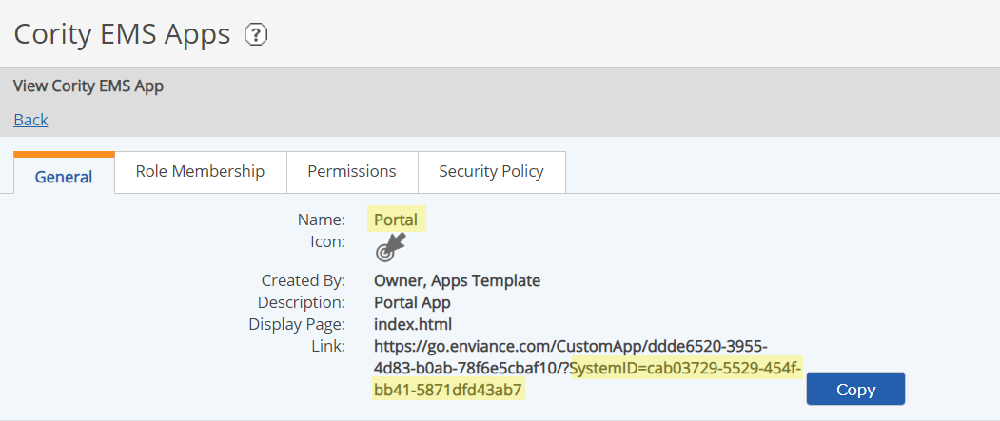

Links to Apps can be configured to use in System Notifications or External Links. System Notifications are emails sent to users from the system to notify them of workflow assignments or status. External links are links to the app from a company web page, a browser bookmark, or from another App.
The following file (download) will help you construct the correct link syntax for your use: AppLinkMaker Tool
For external links, you will need the SystemID. You can find the SystemID in App Manager (Setup > Enviance Apps). Select the app. The System ID is the last part of the "Link" value shown in the General tab. Use the Copy button to copy the link text, then select just the part after "SystemID=" to copy into the link format above, replacing [SystemID].

Do not use the full "Link" given on the General tab, which will not be supported in future and may break.
Use EQL queries to obtain any other IDs (GUIDs) that you may need for your links, such as object IDs for object associations or workflow IDs.
Details of link formats and syntax are described below, for information or debugging. The AppLinkMaker tool will build these formats automatically for you.
For System Notifications used in email notifications, the {url::basePath} macro is used. The initial link syntax used in system emails is:
{url::basePath}AppName/
The {url::basePath} macro includes the "https:" prefix and the system id. This is the format you will use in a Notification Template.
For a link from an external page or to use for a bookmark, the explicit link format is required, as the macros will not work. The link format includes the system id and the app name ending with a slash, as follows:
https://go.enviance.com/goto/[SystemId]/AppName/
Replace [SystemId] with the System GUID (as shown above).
AppName is the name of the app on the General tab in App Manager. To find the App Name, select Setup > Enviance Apps from the main menu. (Do not use the name of the app as it appears on the main menu, as this may be different than the actual app name.)
App Name restrictions: The AppName is case-sensitive. In the case of custom WAB apps, the name of the app must end in "App". Spaces are not allowed (or must be url-encoded with %20).
To link to a specific page in the app, append a query and use "hash" for #, so the starting url will be:
{url::basePath}AppName/?hash=/
or:
https://go.enviance.com/goto/[SystemId]/AppName/?hash=/
Link examples for the InspectionApp are shown in the following table. The format shown is for notification templates. You can convert them to external link syntax using the guidelines above. Other macros may be replaced by object GUIDs but in most cases this is not useful.
| InspectionApp Links | |
|---|---|
| Calendar page | {url::basePath}InspectionApp/?hash=/home?calendar |
| Map page | {url::basePath}InspectionApp/?hash=/home?map |
|
Dashboard page syntax with filters Parameters: type: insp, ca filter: division, facility, company dateFrom/dateTo: Dates are in international format (yyyy/mm/dd) and need to be url encoded preceded by a carriage return (%0D) and line feed (%0A), and "/" replaced with %2F. Thus date range 2015/01/01 to 2015/12/31 becomes: %0D%0A2015%2F01%2F01?2015%2F12%2F31? status: outstanding, complete object: Name of object to filter by: division, facility or company If type=division, the name of the division If type=facility, the name of the division and facility, url-encoded. Example: Manufacturing/San Diego is expressed as 'Manufacturing%2FSan%20Diego') If type=company, dashboard filter is 'Company Wide' |
Basic link format with parameters: {url::basePath}InspectionApp/?hash=/dashboard/list?<type>?<filter>?<dateFrom>?<dateTo>?<status>?<object> Minimal link to dashboard with type, filter and dates: {url::basePath}InspectionApp/?hash=/dashboard/list?insp?division?%0D%0A2015%2F01%2F01?2015%2F12%2F31
Link Examples with more filters: Precede all links with: {url::basePath}InspectionApp/?hash= List of all inspections for current year (2015) filtered by division /dashboard/list?insp?division?%0D%0A2015%2F01%2F01?2015%2F12%2F31
List of all outstanding corrective actions company-wide /dashboard/list?ca?company?%0D%0A2015%2F01%2F01?2015%2F12%2F31?outstanding
List of all outstanding corrective actions for the Manufacturing division /dashboard/list?ca?division?%0D%0A2015%2F01%2F01?2015%2F12%2F31?outstanding?Manufacturing
List of all outstanding corrective actions from 2015/01/01 to 2015/12/31 for Manufacturing/San Diego facility: /dashboard/list?ca?facility?%0D%0A2015%2F01%2F01?2015%2F12%2F31?outstanding?Manufacturing%2FSan%20Diego
|
|
Dashboard with inspections or corrective actions "Assigned to Me" Display only data where the Assignee = the current user or any groups to which the current user belongs. Same as above, with addition of "/assigned" |
Inspections by division, assigned to me {url::basePath}InspectionApp/?hash=/dashboard/list?insp?division?%0D%0A2015%2F01%2F01?2015%2F12%2F31/assigned Corrective Actions by division, assigned to me: {url::basePath}InspectionApp/?hash=dashboard/list?ca?division?%0D%0A2015%2F01%2F01?2015%2F12%2F31/assigned |
To use the link in a Notification Template, create the text for the notification and add the chosen link in the format shown in the table.
Example 1: Go to dashboard list of corrective actions
To view your corrective actions, click the link below:
{url::basePath}InspectionApp/?hash=dashboard/list?ca?division?%0D%0A2015%2F01%2F01?2015%2F12%2F31/assigned
Use the source editor to create link text in place of the URLstring. In the notification editor, click the Source button to open the html editing window. Edit the text to add the link with the correct html syntax like this:
Example 2: Link encoded for html
<p>To view your corrective actions, <a href="{url::basePath}InspectionApp/?hash=dashboard/list?ca?division?%0D%0A2015%2F01%2F01?2015%2F12%2F31/assigned">CLICK HERE</a>.</p>
Be sure to remove any extraneous html that may have been added by the editor. Be careful that no html tags or extra spaces are inside the URL.
When you use the {url::basePath} macro, do not include "http://" in the link, as it is already specified in the macro.
All links must be URL encoded (i.e., use %20 for spaces and encode special characters). See: http://www.w3schools.com/tags/ref_urlencode.asp
Sample email text formats with pre-configured links are also available for download. See Sample InspectionApp Email Notifications.